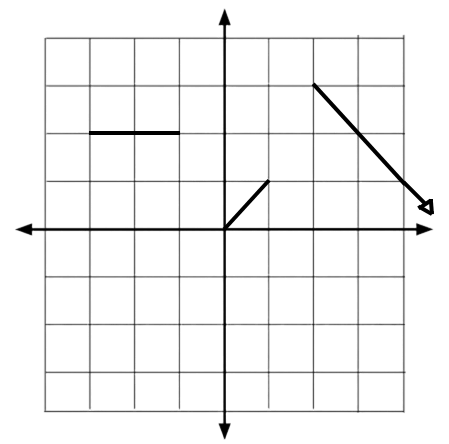

Piecewise Functions
Introduction
Piecewise functions are functions that are broken up into pieces. This can create irregular slopes and lines that a linear line wouldn't normally produce...

Done? Here are other Links
Back to Main Page
Back to Informational
If you are seeing this, your clock is missing a ding-dong
If you are seeing this, your calender needs a pin or two.